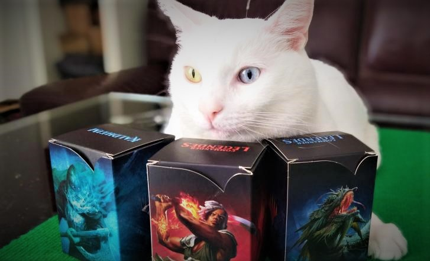

Unorder list
Nous créons une liste non ordonnée
- Pomme
- Fraise
- Banane
Order list
- Pomme
- Fraise
- Banane
Les listes imbriquées
- Introduction
- Partie I
- Definition
- Auteur
- Partie II
- Conclusion
Les différents liens
lien entre 2 pages situés dans le même dossier
lien vers la page2lien vers la page située dans un sous dossier
lien vers la page3lien vers une page situé dans le dossier parent
lien vers la page4Les liens externes
lien vers la home de wikipedia
Les differents liens avec l'attribut target
- _self: est la valeur par défaut: la page cible s'ouvre dans le même emplacement que là où l'utilisateur a cliqué. wikipédia s'ouvre au même endroit
- _blank: la page cible s'ouvre dans un nouvel onglet ou dans une nouvelle fenêtre wikipedias'ouvre dans un nouvel onglet
- _parent: la page cible s'ouvre dans le cadre (frame) de niveau immédiatement supérieur par rapport à l'emplacement du lien wikipedia s'ouvre au niveau immédiatement supérieur
- _top: la page cible s'ouvre dans la fenêtre hôte (par dessus le frameset) wikipedias'ouvre dans la fenêtre hôte
Les liens de type ancre
Prenons l'exemple d'un sommaire
Propriété
Origine
Conclusion
Plus loin dans la page nous permettra d'avoir accés au titre ou au texte qui nous interresse.
Origine
Propriété
Conclusion
Insérer un mail
Ecrivez moi
Insérer des images et des vidéos
Image en interne
Image en externe

Insérer une vidéo en interne
Insérer une vidéo en externe